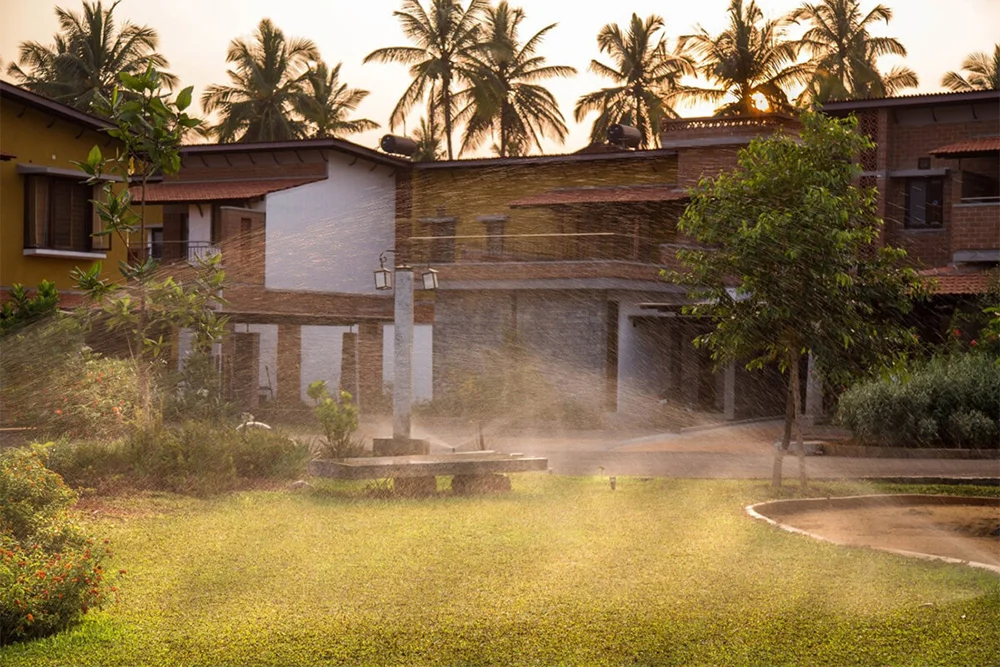

WaterRooftop rainwater harvesting is imperative today as ground water sources are drying up rapidly
Water is a finite resource. Groundwater sources are drying up in many places, and cities are increasingly dependent on groundwater or river sources for drinking water. This dependence is unsustainable because groundwater sources cannot be replenished quickly enough to keep up with demand and rivers run low or even dry up after a bad season of rain. Rooftop rainwater harvesting can help to sustainably meet the demand for clean water without having to wantonly stress out resources such as aquifers or rivers.
Replenishes water sources, conserves the environment and helps the local eco-system at large
In most places, rain water gets wasted – this water is well on its way to becoming a scarce commodity. Effective rain water harvesting ensures that one saves and replenishes water which helps in times of scarcity.
At GoodEarth Malhar, the framework for maximum capture, minimal wastage and optimum reuse is done so that not a single drop of water is wasted. We have mapped out all the deep and shallow water aquifers which helps us in planning a complex rain-water harvesting plan which maximizes the capture of rainfall and channels it into the underground aquifers.
It’s important to know that this is an effective and environmentally friendly solution to many of our water problems. Rooftop rainwater harvesting systems provide self-sufficiency to the water supply, reduce the need to access ground water and conserve energy by reducing pumping costs.
Less expensive than traditional systems and easy to construct, operate and maintain
Rooftop rainwater harvesting can be done in a variety of ways: some systems are installed directly on top of buildings while others are set up at ground level or below ground level. The most practical type is called surface storage as it’s easy to install and doesn’t require any drilling into concrete structures such as homes or office buildings; however there are other methods available if you prefer something different such as buried cisterns or underground tanks which require less maintenance over time because they don’t have exposed parts like pipes with moving parts that could get clogged up causing leaks inside walls etc.
The rooftop rainwater can be conserved and used for the domestic purposes. This approach requires connecting the outlet pipe from rooftop to divert the water to the rainwater tanks. The water collected is later filtered before sending it to the homes. The main objective of rooftop rain water harvesting is to make water available for both immediate and future use.
This technique at GoodEarth provides self-sufficiency to our water supply and reduces the cost for pumping of ground water. Rooftop rain water harvesting systems are less expensive, easy to construct, operate and maintain. The inlet into the storage tank should be screened in such way that any debris from the rooftop is restricted to enter the rainwater tanks. How efficiently the rainfall can be collected depends on several considerations. Collection efficiencies of 80% are often used for design consideration.
Simple Rainwater Balance for a Household
By effective management of rainwater we can reuse more than 50% of water just from the rooftop.
Reference: Average 600-750 liters of water consumed per day per family
Illustration of Rainwater System
Rooftop rainwater harvesting is an effective way of conserving groundwater. It is also easy to maintain and easy to construct, which means it will cost less than more traditional systems.
When you consider all these benefits, it’s clear that rooftop rainwater harvesting is a must for communities who want to save, conserve and be a part of a sustainable future.